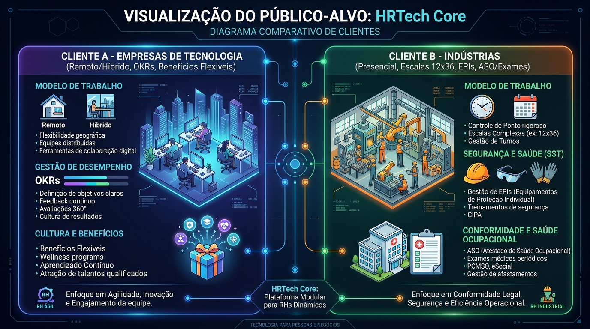
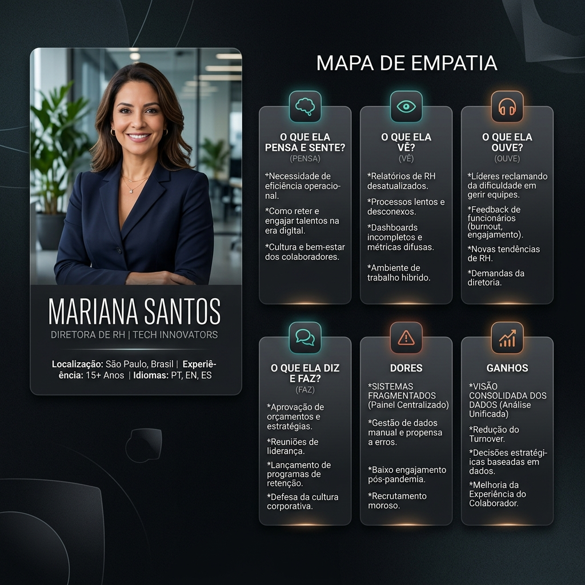
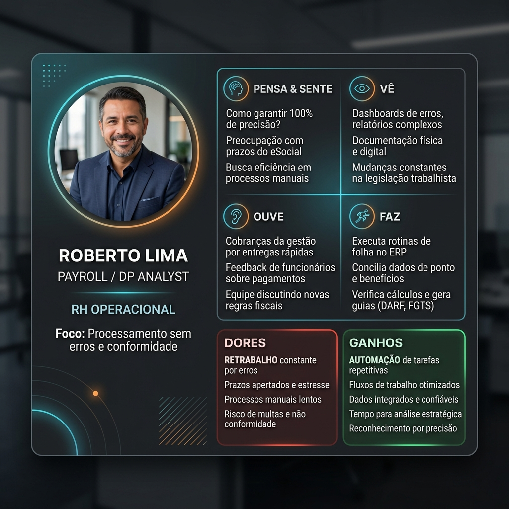
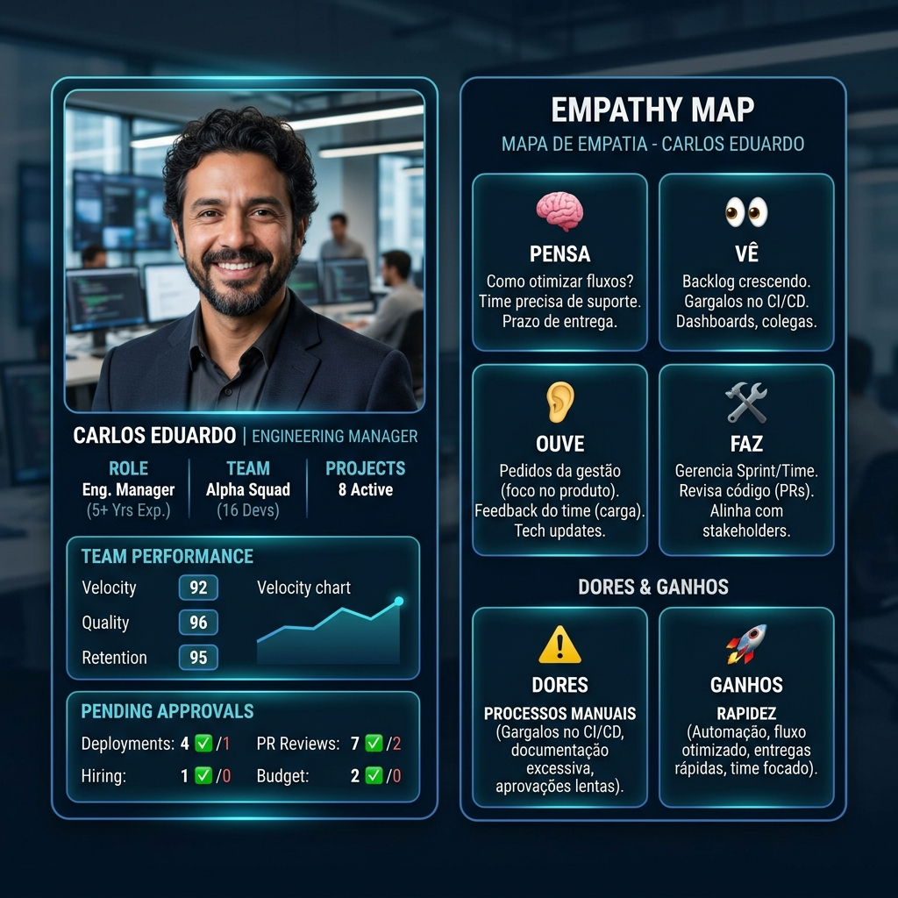
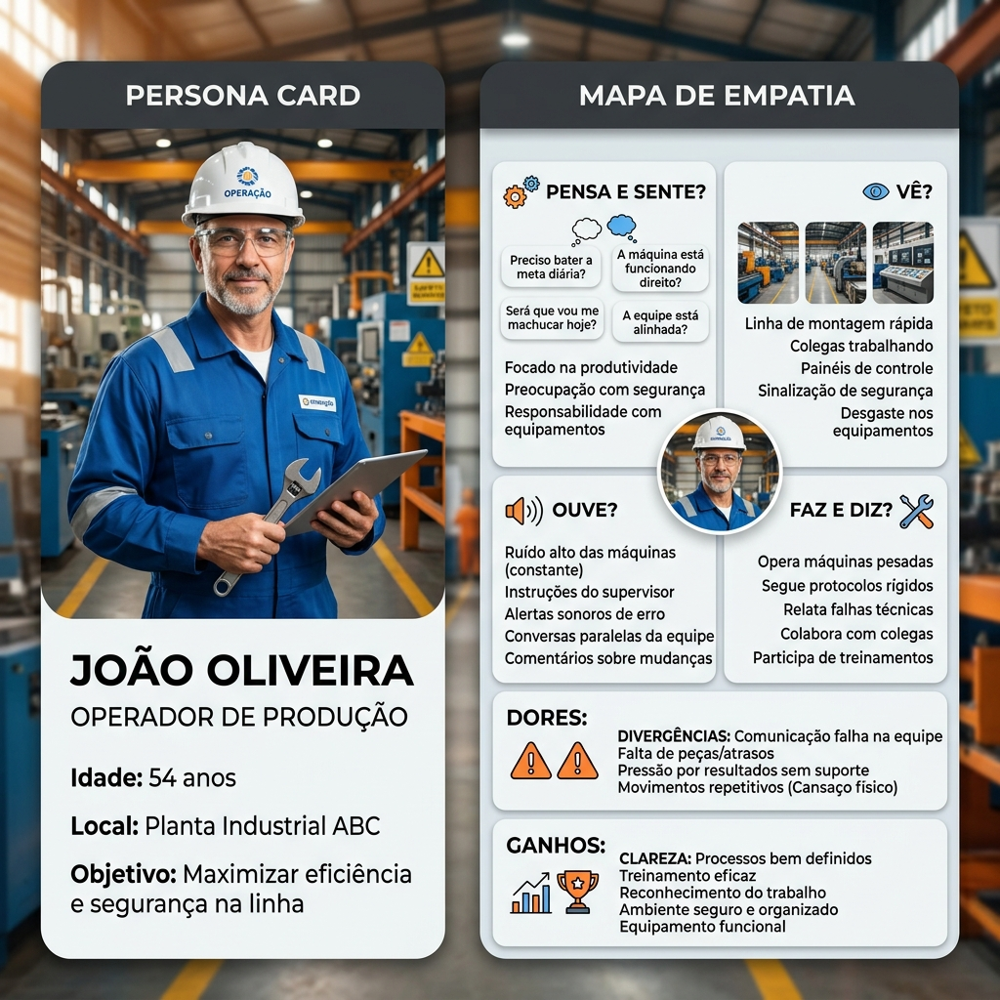
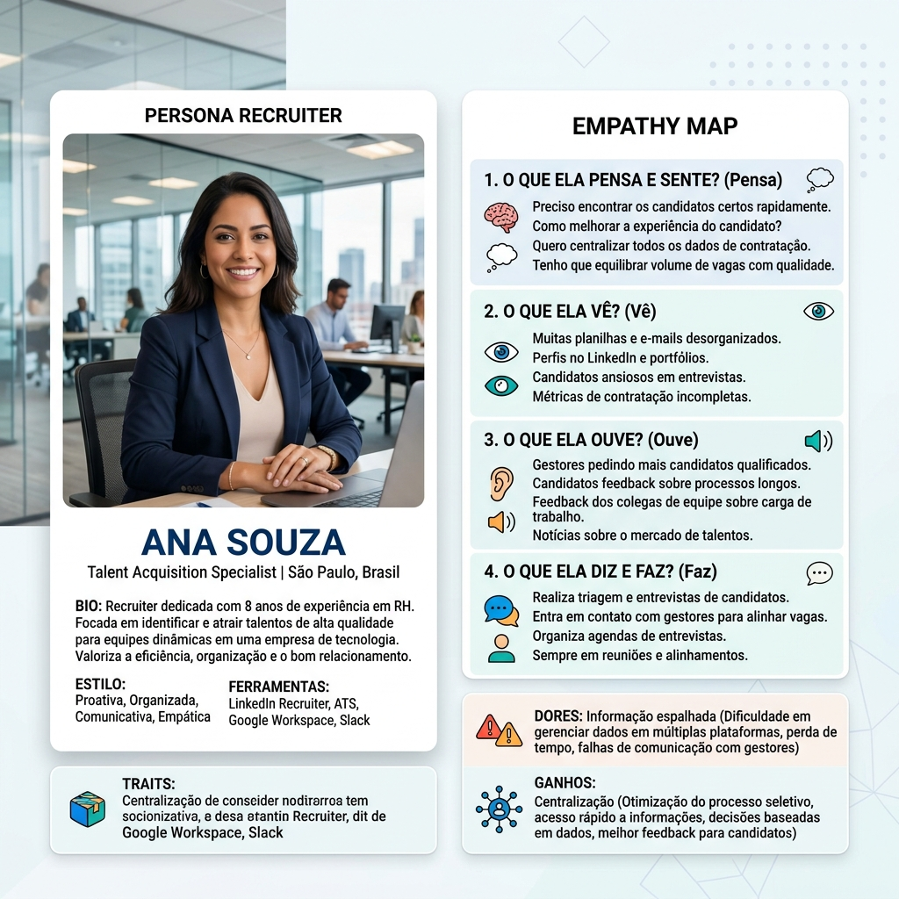
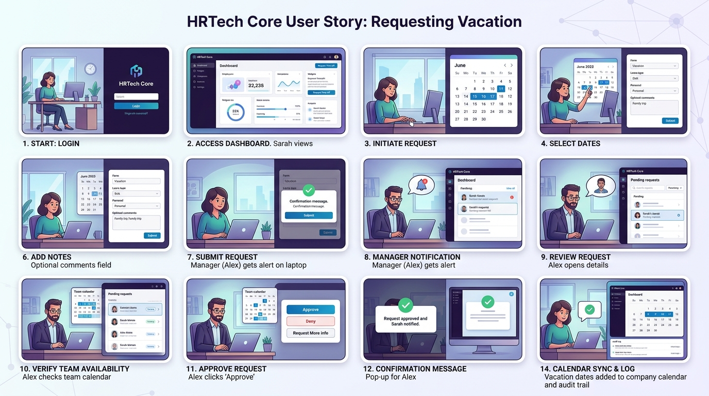

Visão Infográfica do Público-Alvo

Cliente A — Empresa de Tecnologia
Remoto / Híbrido- Jornada: Banco de horas flexível sem marcação rígida
- Benefícios: Cartão multibenefícios flexível (Caju/Flash)
- Desempenho: Avaliação 360° e acompanhamento por OKRs
- Segurança: Módulo de EPIs desabilitado
Cliente B — Indústria Metalúrgica
100% Presencial- Jornada: Escalas rígidas de turnos (ex: 12x36)
- Benefícios: Benefícios fixos previstos em convenção coletiva
- Desempenho: Avaliação por função e conformidade legal
- Segurança & Saúde: Gestão obrigatória de EPIs, ASO e Exames
Cliente C — FinCorp Seguros
Financeiro / Seguros- Jornada: Presencial/comercial com controle de horário bancário
- Benefícios: Seguro de vida obrigatório + benefícios regulados
- Desempenho: Avaliação por metas comerciais e conformidade
- Segurança & Regulação: Compliance, trilha de auditoria e dupla custódia
Os 3 Níveis de Variabilidade da LPS
A variabilidade do HRTech Core não acontece em um único nível. Ela é modelada em três camadas independentes, o que é o que realmente sustenta o Reuso do núcleo:
- Núcleo comum: cadastro de colaboradores, autenticação, aprovações — 100% reutilizado por qualquer cliente.
- Segmento (Tecnologia / Indústria / Financeiro): módulos e regras compartilhados por todos os clientes daquele segmento (ex: EPIs para toda indústria, Compliance para todo financeiro).
- Cliente específico: funcionalidade contratada/ativada para um único cliente, independente do segmento (ex: Portal do Corretor, exclusivo da FinCorp Seguros). Veja a Tela 15 e a Tela 17.
6 Personas e Mapas de Empatia
Conheça as seis personas mapeadas no projeto, seus papéis no HRTech Core e os respectivos Mapas de Empatia visualizados.

Mariana Santos — Diretora de RH
Foco: Gestão estratégica, indicadores consolidados e retenção de talentos.

Roberto Lima — Analista de DP
Foco: Operação de folha, ponto, cadastro sem erros e conformidade legal.

Carlos Eduardo — Gerente de Engenharia
Foco: Produtividade do time de dev, aprovação ágil de férias e acompanhamento de OKRs.
Lucas Silva — Desenvolvedor Remoto
Foco: Transparência no banco de horas, benefícios flexíveis e solicitação ágil de férias.

João Oliveira — Operador de Fábrica
Foco: Registro correto da jornada 12x36, entrega de EPIs e acompanhamento de exames ASO.

Ana Souza — Recrutadora
Foco: Organização de cargos, departamentos, admissão de novos colaboradores e organograma.
Storyboard — Fluxo de Solicitação de Férias (14 Interações)
O storyboard mapeia ponta a ponta a história do usuário desde a entrada no sistema até a aprovação pelo gestor e atualização no dashboard de RH.
Painel Visual Integrado do Storyboard

Detalhamento Sequencial das 14 Etapas
Autenticação no Sistema
História: Colaborador entra no sistema com suas credenciais.
Interface: Tela de Login | Ação: Autenticação via Usuário/Senha
Visualização do Dashboard
História: Colaborador observa o resumo das suas informações pessoais e saldo acumulado.
Interface: Resumo Pessoal | Ação: Consulta de Saldo de Férias
Acesso ao Módulo de Férias
História: O colaborador clica no menu lateral para acessar a área de férias.
Interface: Menu de Navegação | Ação: Seleção do Módulo
Consulta de Períodos Aquisitivos
História: O sistema exibe os períodos aquisitivos disponíveis e os dias acumulados.
Interface: Lista / Calendário de Períodos | Ação: Leitura de Dados
Seleção das Datas
História: O colaborador escolhe a data inicial e final do descanso.
Interface: Calendário Interativo | Ação: Seleção de Intervalo
Validação de Regras do Cliente
História: O sistema valida as regras (ex: antecedência mínima, abono pecuniário).
Interface: Mensagem de Validação | Ação: Validação em Tempo Real
Envio da Solicitação
História: Colaborador revisa as informações e confirma o pedido.
Interface: Formulário de Solicitação | Ação: Envio
Registro do Pedido Pendente
História: O sistema registra a solicitação e coloca o status em "Aguardando Aprovação".
Interface: Card de Status Pendente | Ação: Persistência no Banco
Notificação ao Gestor
História: O gestor da equipe recebe uma notificação instantânea do novo pedido.
Interface: Central de Notificações / E-mail | Ação: Alerta de Solicitação
Análise de Conflitos de Escala
História: O gestor abre os detalhes para verificar sobreposição com outros liderados.
Interface: Painel de Detalhes da Solicitação | Ação: Consulta de Equipe
Decisão do Gestor
História: O gestor clica no botão para aprovar o pedido do colaborador.
Interface: Botões Aprovar / Recusar | Ação: Decisão de Gestão
Atualização de Histórico e Auditoria
História: O sistema atualiza o status para "Aprovado" e grava a trilha de auditoria.
Interface: Histórico e Trilha de Auditoria | Ação: Auditoria Log
Retorno ao Colaborador
História: O colaborador recebe a notificação de aprovação com sucesso.
Interface: Pop-up / E-mail de Retorno | Ação: Confirmação ao Usuário
Acompanhamento do RH
História: O departamento de RH visualiza as férias aprovadas nos indicadores de absenteísmo.
Interface: Dashboard de Indicadores do RH | Ação: Métrica Consolidada
HRTech Core
Plataforma Modular de Gestão de RH
Minha Jornada Recente
| Data | Entrada | Almoço | Saída | Status |
|---|---|---|---|---|
| Hoje (14/08) | 08:02 | 12:00 - 13:00 | --:-- | Em Andamento |
| Ontem (13/08) | 08:00 | 12:00 - 13:00 | 17:30 | +30m Banco |
| 12/08/2026 | 08:15 | 12:00 - 13:00 | 17:15 | Normal |
Comunicados da Empresa
Lembre-se de agendar suas férias com até 30 dias de antecedência no sistema.
Novos créditos de Caju e refeição disponíveis a partir do dia 01.
Dashboard Executivo de Recursos Humanos
Visão consolidada de indicadores de headcount, absenteísmo, banco de horas e métricas da Linha de Produção (LPS).
Distribuição por Departamento
Indicadores de Medição de Software
| Métrica / Indicador | Valor Medido | Meta |
|---|---|---|
| Tempo médio API Ponto | 120 ms | < 200 ms |
| Cobertura de testes CRUD | 92% | > 85% |
| Ativos reutilizados (%) | 83.3% (5/6) | > 75% |
| Tempo p/ instanciar novo cliente | 4 horas | < 8 horas |
| Nome | Cargo | Departamento | Modelo de Trabalho | Status | Ações |
|---|
Form de Cadastro / Edição de Colaborador
Preencha os dados do colaborador. Os campos adaptam-se conforme o perfil do cliente ativado.

Dados Contratuais & LPS
- Data de Admissão: 15/03/2023
- Gestor Direto: Carlos Eduardo (Gerente de Eng.)
- Regime: CLT Flex - Remoto
- Configuração de Ponto: Banco de horas flexível
- Benefício Ativo: Caju Flex R$ 1.450/mês
Histórico de Férias & Alterações
- 10/01/2026: Gozo de 10 dias de férias (Aprovado por Carlos Eduardo)
- 15/03/2025: Promoção para Senior Developer
- 15/03/2023: Admissão no sistema HRTech Core
Organograma Interativo (Ativo Reutilizável AR02)
Visualização hierárquica completa da empresa com componente visual reutilizável de front-end.
| Data | Entrada 1 | Saída 1 | Entrada 2 | Saída 2 | Total Trabalhado | Saldo do Dia |
|---|---|---|---|---|---|---|
| 14/08/2026 (Hoje) | 08:02 | 12:00 | 13:00 | --:-- | 04h 02m | Em Andamento |
| 13/08/2026 | 08:00 | 12:00 | 13:00 | 17:30 | 08h 30m | +00h 30m |
| 12/08/2026 | 08:00 | 12:00 | 13:00 | 17:00 | 08h 00m | 00h 00m |
| 11/08/2026 | 08:15 | 12:00 | 13:00 | 17:45 | 08h 30m | +00h 30m |
Solicitação de Ajuste de Ponto (Regra RB05)
Preencha a justificativa e anexe comprovantes para correção de batidas esquecidas ou atestados.
Gestão de Férias & Calendário (Regra RB04)
Consulte seu saldo de dias e programe suas férias respeitando as regras do seu contrato.
Form de Solicitação de Férias
Minhas Solicitações de Férias
Central de Aprovações do Gestor (Carlos Eduardo)
Analise e aprove as solicitações pendentes da sua equipe de Engenharia.
| Colaborador | Tipo de Solicitação | Detalhes | Data Pedido | Ações |
|---|---|---|---|---|
|
Lucas Silva Dev Remoto |
Férias (15 dias) | Período: 01/09/2026 a 15/09/2026 | 14/08/2026 | |
|
Ana Souza Recrutadora |
Ajuste de Ponto | Saída dia 13/08 às 17:30 (Esquecimento) | 13/08/2026 |
Gestão de Benefícios (Módulo Variável LPS)
Configuração atual: Flexível (Cliente A - Tecnologia)
Vale Refeição & Alimentação
R$ 950,00 / mês (Flexível Caju)
Plano de Saúde & Odonto
Bradesco Saúde Top Nacional (100% Coberto)
Gympass / TotalPass
Plano Silver Liberado
Avaliação de Desempenho & OKRs (RFV01 / RFV02)
Configuração atual: Avaliação 360° + OKRs (Tecnologia)
Meus OKRs do Trimestre (Q3)
Avaliação 360° Recente
Status: Concluída
Nota Média da Equipe: 4.8 / 5.0
"Lucas demonstra excelente capacidade técnica e liderança em projetos remotos."
Módulo Industrial: EPIs & Exames ASO (RFV05 / RFV06)
Este módulo é exclusivo da variabilidade de empresas industriais (Cliente B).
Registro de Entrega de EPIs
| Equipamento | Data Entrega | Validade | Status |
|---|---|---|---|
| Capacete de Segurança Abafador | 10/01/2026 | 10/01/2027 | Válido |
| Bota com Biqueira de Aço | 15/02/2026 | 15/08/2026 | Vencendo |
Controle de Exames Médicos (ASO)
- Último ASO Periódico: 12/02/2026 (Apto)
- Próximo Exame: 12/02/2027
- Audiometria: Realizada em 12/02/2026
Configuração da Empresa & Variabilidade LPS (UC09)
Gerencie a ativação dos módulos e regras de negócio sem alterar o núcleo do software.
Módulos Habilitados para este Tenant
Permite saldo positivo/negativo sem limites rígidos
Ativa gestão de segurança do trabalho e exames
Ativa acompanhamento por metas e feedbacks cruzados
Ativa trilha de auditoria e aprovação em dupla custódia para o segmento Financeiro/Seguros
Add-on contratado individualmente por este cliente — controla comissionamento e apólices de corretores parceiros
Matriz de Ativos Reutilizáveis & Requisitos Variáveis (Atualizada)
| ID | Descrição | Tecnologia | Indústria | Financeiro |
|---|---|---|---|---|
| AR01–AR05 | Ativos reutilizáveis do núcleo (Auth/RBAC, Organograma, Motor de Ponto, Modelo de Dados, Suíte de Testes) | Reutilizado | Reutilizado | Reutilizado |
| AR06 | Matriz de requisitos e pontos de variabilidade (documento) | Reutilizado | Reutilizado | Reutilizado |
| RFV07 | Trilha de auditoria e dupla custódia | — | — | Segmento |
| RFV08 | Certificação Susep e nível de acesso LGPD | — | — | Segmento |
| RFV09 | Portal do Corretor (comissionamento de parceiros) | — | — | Cliente Específico |
RFV07 e RFV08 variam por segmento (disponíveis para qualquer cliente Financeiro). RFV09 varia por cliente específico — é a prova de que a LPS aqui suporta personalização além da simples troca de tema/segmento.
Compliance & Auditoria (RFV07 / RFV08)
Módulo disponível para todo o segmento Financeiro — não é exclusivo de um único cliente. Qualquer empresa financeira instanciada na LPS pode habilitá-lo na Tela 15.
Trilha de Auditoria (Últimos Eventos)
| Data/Hora | Usuário | Ação | Status |
|---|---|---|---|
| 14/08/2026 09:12 | Gabriel Torres | Alteração de dados cadastrais sensíveis | Aguardando 2ª Aprovação |
| 13/08/2026 17:40 | Helena Martins | Emissão de apólice acima do limite de alçada | Aprovado (Dupla Custódia) |
| 12/08/2026 11:05 | Mariana Santos | Consulta a dados de colaborador (LGPD) | Registrado |
Aprovação em Dupla Custódia
Operações sensíveis (alteração cadastral, emissão fora de alçada) exigem confirmação de um segundo responsável antes de serem efetivadas — regra obrigatória apenas para o segmento Financeiro.
- Regra ativa: Dupla aprovação para valores acima de R$ 50.000,00
- Responsável 1: Analista solicitante
- Responsável 2: Gestor ou Compliance
- Base legal: Normas Susep e política interna de conformidade
Portal do Corretor Exclusivo FinCorp Seguros
Este módulo não pertence ao pacote padrão do segmento Financeiro. É um recurso contratado individualmente pela FinCorp Seguros para gerenciar sua rede própria de corretores parceiros.
Corretores Parceiros Ativos
| Corretor | Apólices no Mês | Comissão Acumulada |
|---|---|---|
| Helena Martins | 18 | R$ 12.400,00 |
| Corretora Sul Seguros Ltda. | 27 | R$ 19.850,00 |
| Paulo Andrade (Autônomo) | 9 | R$ 5.100,00 |
Resumo de Comissionamento
- Apólices emitidas via parceiros (mês): 54
- Comissão total a repassar: R$ 37.350,00
- Prazo de repasse: Até o 5º dia útil do mês seguinte
- Regra de auditoria: Todo repasse acima de R$ 15.000,00 segue para dupla custódia (Tela 16)